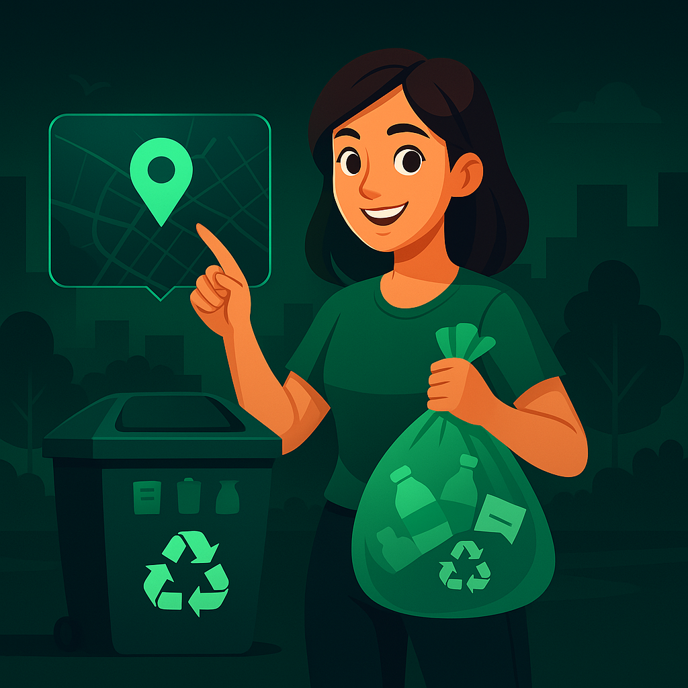

Nuestros Servicios

Capacitaciones
Aprende todo sobre el reciclaje con nuestros cursos y talleres online para todas las edades. Expertos en sostenibilidad te guiarán en este camino verde.
Ver Cursos

Puntos de Reciclaje
Encuentra los puntos de reciclaje más cercanos a tu ubicación y contribuye con el medio ambiente depositando tus residuos correctamente.
Ver Mapa
Solicitud de Recolección
¿Tienes muchos residuos reciclables? Solicita nuestro servicio de recolección y nosotros nos encargamos de llevarlos al lugar adecuado.
Solicitar